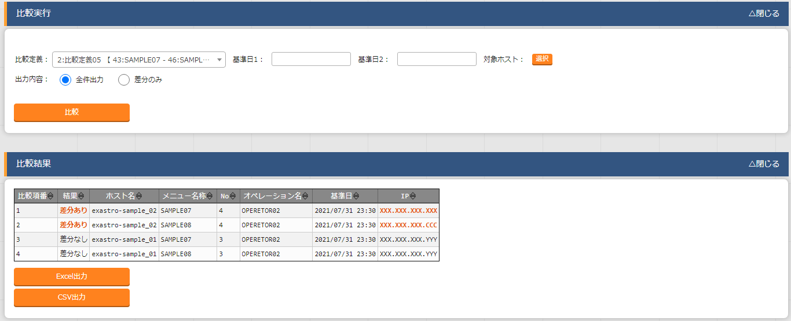
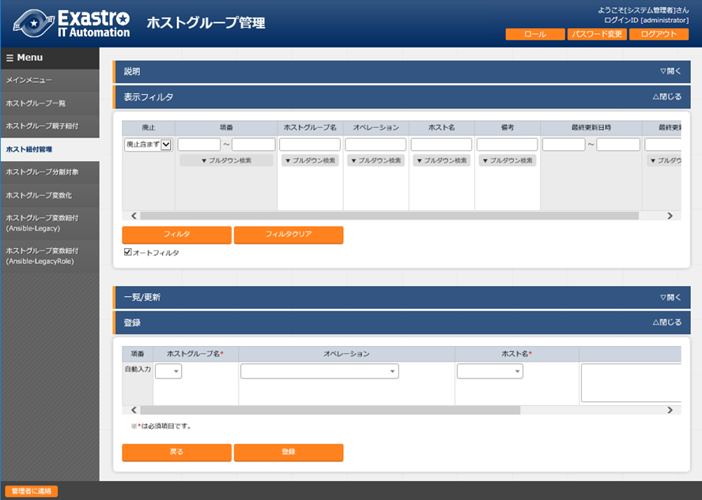
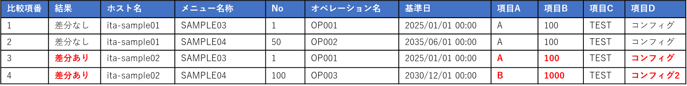

2. ユーザ¶
2.1. はじめに¶
本章では、Exastro Suite におけるユーザについて説明します。
2.2. ユーザとは¶
Exastro システムの利用者のことを指します。
ユーザのタイプには大きく分けて下記の3種類が存在します。
プラットフォーム管理者
オーガナイゼーション管理者
利用ユーザ
プラットフォーム管理者 は、Exastro システム全体の管理者のことで、オーガナイゼーションやオーガナイゼーション管理者の作成、プランの設定といったシステム全体に関わる操作を実行できる一方で、オーガナイゼーション内のワークスペース、および、Exastro IT Automation に関する操作は実行できません。
オーガナイゼーション管理者 は、オーガナイゼーションの管理者のことで、プラットフォーム管理者により作成されたオーガナイゼーションに対してユーザの作成やロールの割当といったオーガナイゼーションの管理をするための操作を実行できます。
利用ユーザ は、上記2つ以外のすべてのユーザのことで、Exastro の各ツールの操作を実行できます。
上記のユーザ毎に作成方法が異なりますので、それぞれの方法について説明します。
2.3. プラットフォーム管理者の作成¶
プラットフォーム管理者は、インストール時に 5. アプリケーションの DB ユーザ設定 で global.keycloakDefinition.secret.KEYCLOAK_USER に指定しインストールした際に作成されます。
2.4. オーガナイゼーション管理者の作成¶
オーガナイゼーション管理者は、オーガナイゼーション作成時に Organization (オーガナイゼーション) で organization_managers に指定することで作成されます。
2.5. 利用ユーザの作成¶
利用ユーザは、下記の方法で作成します。
- Exastro Platformにオーガナイゼーション管理者でログインします。
- Exastro Platformのメニューより をクリックします。

注釈
オーガナイゼーション管理者以外でログインしている時は、メニューに は表示されません。 - keycloakのユーザ画面が表示されるので、 ユーザの追加 ボタンをクリックします。

- keycloakのユーザの追加画面が表示されるので、ユーザの情報を入力して 保存 ボタンをクリックします。
 - 登録が正常に終了すると、以下の画面が表示されますので、 タブをクリックします。

- 「パスワード」および「新しいパスワード（確認）」に初期パスワードを入力し パスワードを設定 をクリックします。
 注釈
一時的を「オン」にした場合は、パスワードを設定したユーザで次回ログイン時にパスワードの変更が必要になります。 - 確認ダイアログが表示されるので、 Set password ボタンをクリックします。

{kind=link}
{kind=link}
{kind=link}